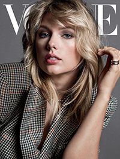
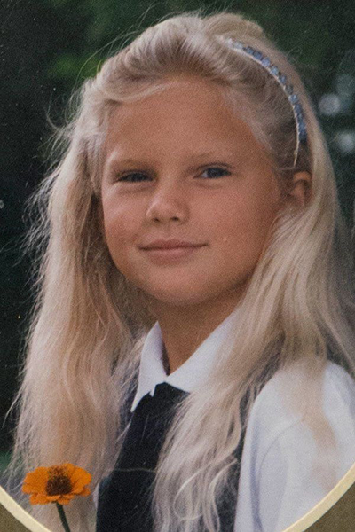
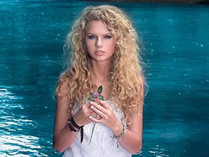
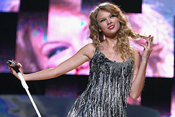
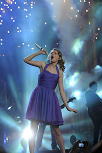
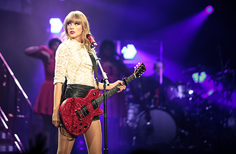
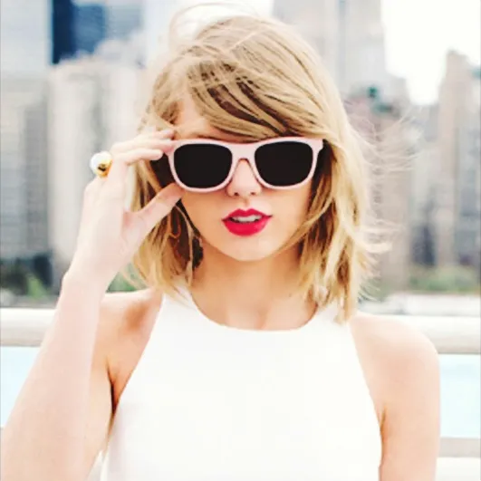
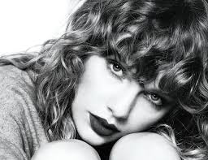
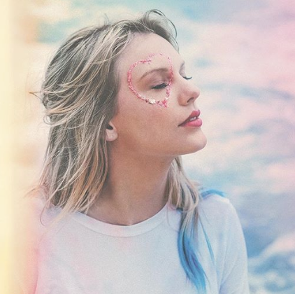
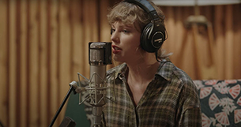

Taylor Swift's Ultimate Fan Page!
This is a website all about Taylor Swift and her eras. I like Taylor Swift because I can resonate with her lyrics and themes that she writes about. She is also a great example of someone who got to great places on her own.

Early life
Taylor Allison Swift was born on December 13th, 1989 in West Reading, Pennsylvania. Her ealiest memories of music were her of her grandmother signing in the church she was part of. As a child, she enjoyed Disney film soundtracks and was drawn to the story telling aspecct of country music. She knew she wanted to do music since the age of 9 when she started acting in theatre productions and traveled to New York for vocal lessons. At the age of 14, she moved to Nashville to start her musical career and graduated from Aaron Academy, a year earlier than her graduating class.

Era One: Taylor Swift
Taylor released her debut album Taylor Swift on October 24th, 2006. The album peaked number five on the US Billboard 200 and spent 157 weeks on the board-the longest stay on a chart in the 2000's. She also became the first to co-write every single track on the album. She got signed by Big Machine Records prior to releasing the album. Swift won Best New Artist at the Grammy awards for her debut album. She also started dating Joe Jonas in 2008 and they dated for 3 months. After their breakup, Taylor wrote an album based on her relationship with Joe called Fearless.

Era Two: Fearless
Taylor released Fearless,her second album, on November 11th, 2008. Songs from this album reached Billboard Top 100 and peaked at number two. The Fearless Tour she went on after the album's release, grossed over $63 million dollars. Taylor recieved the Best Female Video award at the MTV Video Awards and during her acceptance speech, Kanye West interrupted her speech and this became a subject of contoversey and a theme in one of her later albums. While shooting her debut film, Valentines Day in 2009, Taylor started dating her co-star Taylor Lautner for a couple of months.

Era Three: Speak Now
Taylor released her thir album, Speak Now, on October 25th, 2010 which quickly reached Billboard 200. She wrote and produced the entire album on her own and during this period dated Jake Gyllenhaal who influences her fourth album. After dating Jake, Taylor started dating Connor Kennedy who was part of the John F. Kennedy family. Kennedy didn't really impact any of her songs. She also went on tour for Speak Now and earned over 123 million dollars. At this point, Taylor was making country music but in her fourth album she changes genres.

Era Four: Red
On Ocotober 22nd, 2012, Taylor released her fourth album, Red. This entire album was about her relationship with Jake Gyllenhaal and the genre was shifted from country to pop. Taylor's tour for this album boomed and she earned 150 million dollars. She earned Artist of the Year for Red and recieved Best Female Video again from the MTV video awards. She breifly dated Harry Styles but people believe this was a publicity stunt for both of them as they both came out of bad relationships. Taylor did end up writing an album based on Harry Styles. Swift's Red era marked her shifiting gears to a new genre and restarting her career.

Era Five: 1989
In 2014, Swift moved to New York City and released her fifth album, 1989, on October 26th 2014 and it was all about getting a fresh start. Prior to the release, Taylor stressed how important it was to keep albums confidental to the public before releasing it. She removed her entire acatalog from Spotify aand pulled 1989 off of Apple Music because she ddin't support their premium plans and artists rights. She put all her music back on the platform again in 2017.She also went on tour for 1989 and earned 250 million dollars. She won Video of the Year and Best Collaboration at the MTV Video Awards for 1989. She started dating Scottish DJ Calvin Harris during this era and they dated for about a year.

Era Six: Reputation
Before releasing her sixth album, Taylor went on a one year social media hiatus where she cleared out her accounts and hid from the public eye after sueing former radio jocket David Mueller saying that he assaulted her and the court ruled in her favor. She was in a relationship with Tom Hiddleston before her hiatus but broke up because of conflicting values and Taylor being at a high point in her career. She started dating Joe Alwyn whom she is still dating. After the one year hiatus, Taylor released her sixth album, Reputation on November 17th, 2017 which highlighted themes of fame and gossip. This album also featured themes connecting to her drama with Kanye West which Kanye didn't react well to. She went on tour for Reputation and this tour became the highest grossing American tour of all time and also followed up with an concert film on Netflix. She won four awards for Reputation. After the electric beats in Reputation, Taylor started working on a much softer album that was dedicated to Joe Alwyn.

Era Seven: Lover
Reputation was the last album Taylor did with Big Machine. She signed with the Universal Music Group which let her maintain ownership to her music. She released her seventh album, Lover, on August 23rd, 2019 which was a soft and love-based album. While promoting Lover, Swift became involved in a public dispute with Big Machine manager Scooter Braun over the purchase of her music. Big Machine wouldn't let Taylor own her music that she wrote so she resolved this issue by deciding to do re-recordings of her music.

Era Nine: Folklore and Evermore
During COVID-19, Taylor released two surprise albums called Folklore and Evermore which were more muted songs that fell under alternative rock. She also started focusing on her re-reordings more during quarantine and became more active on social media. Folklore became a 2020 best seller and Taylor won Artist of the Year for the third time.

Era Ten: Re-recordings and Midnights
In 2021, Taylor re-recorded Fearless and it became the first album that was re-recorded to appear in Billboard 200. She released a re-recording of Red on November 12, 2022 and added a track called "All Too Well (10 minute version)" to the discography. All Too Well debuted number one on the Hot 100 list. She also made a short film for All too Well that starred Sadie Sink and Dylan O' Brien. On October 21st, 2022, Taylor released her most recent album, Midnights. It became an instant sensation and debuted atop the Billboard 200. Swift announced her tour for Midnights and all of her other albums called the Eras tour which broke the record for the most concert tickets sold in a single day. The ticket sales company, Ticketmaster was widely castigated for handling the tour's sales and was put under government investigation after the website broke down during the ticket's pre-sale. Taylor took this issue to social media and expressed her grievances towards Ticketmaster.
My Favorite Taylor Swift Quote
"Just be yourself, there is no one better"
My Top 3 Taylor Swift Songs From Each Album
- Taylor Swift
- Picture To Burn
- Tim McGraw
- Our Song
- Fearless
- You Belong With Me
- Love Story
- Fifteen
- Speak Now
- Enchanted
- Back to December
- Mine
- Red
- All Too Well
- We Are Never Ever Getting Back Together
- Starlight
- 1989
- New Romantics
- Blank Space
- Wildest Dreams
- Reputation
- Don't Blame Me
- Getaway Car
- End Game
- Lover
- Cruel Summer
- Miss Americana & The Heartbreak Prince
- London Boy
- folklore
- the last great american dynasty
- mirrorball
- cardigan
- evermore
- no body, no crime
- willow
- champagne problem
- Midnights
- Question...?
- Maroon
- Bejewled
My Favorite Albums In Order
- Lover
- Red
- Reputation
- 1989
- Fearless
- Speak Now
- Midnights
- folklore
- evermore
- Taylor Swift
Tay lor Swift's Discography
Right click on the purple links for a Spotify link to listen to each album!
Why do others like Taylor Swift?
To a lot of people,Taylor Swift is an icon who makes amazing music. None of her music is disliked by her fans and there's a song to match every one of our emotions. She chased after her dreams on her own making her a great role model.
Contact Information
Email me!
Call Me!